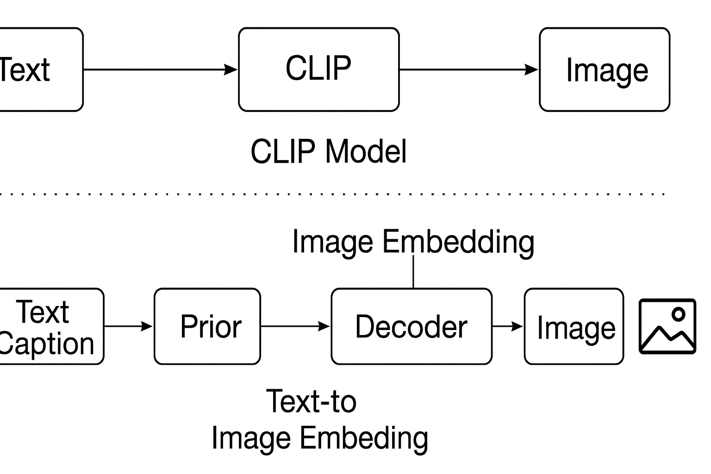
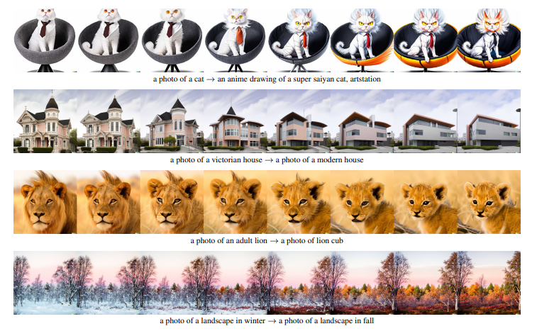

In recent years, artificial intelligence has made significant breakthroughs in the field of image generation. The traditional Generative Adversarial Network (GAN) performs well in image synthesis, but in text-to-image tasks, it often suffers from insufficient semantic consistency and limited diversity. Meanwhile, the CLIP (Contrastive Language–Image Pretraining) model learns through contrastive training on large image-text datasets, constructing a unified representation space for images and text and showing strong semantic understanding and zero-shot generalization ability. This study builds upon CLIP’s representational strength and combines it with the generative capability of Diffusion Models to propose a new hierarchical text-conditioned image generation framework, unCLIP. It achieves notable improvements in generation quality, diversity, and interpretability.
The core objective is to achieve controllable, high-fidelity, semantically consistent, and diverse text-to-image generation within the CLIP latent space.
The unCLIP model is a two-stage hierarchical framework. Rather than directly generating pixels from text, it first produces a semantic representation in CLIP latent space, then reconstructs an image through diffusion decoding. This decomposition simplifies text-to-image generation into two subproblems:
The overall architecture of unCLIP consists of two components:
The overall conditional probability can therefore be expressed as:
\( P(x|y) = P(x|z_i, y)\,P(z_i|y) \)
Figure 1 – unCLIP Model Overview. The Prior maps text captions to CLIP embeddings, and the Diffusion Decoder reconstructs images conditioned on those embeddings.
The Prior model forms the first stage of unCLIP, transforming text embeddings into CLIP image embeddings. Two types of priors are considered:
Classifier-free guidance randomly drops text conditioning to enhance diversity and robustness.
The decoder reverses a diffusion process to gradually denoise random noise into an image. Conditioned on the CLIP embedding, it iteratively reconstructs realistic outputs step-by-step.
unCLIP is trained on roughly 650 million text–image pairs. On MS-COCO 256×256, unCLIP achieves FID = 10.39 ( vs GLIDE 12.24, DALL·E 28 ). Both human and quantitative evaluations show that unCLIP attains an optimal balance between photorealism and diversity.
Figure 2 – Examples of unCLIP text-to-image generation and text-guided editing (Ramesh et al., 2022).
| Model | Photorealism | Caption Similarity | Diversity |
|---|---|---|---|
| GLIDE | 52.9 % | 58.9 % | 37.4 % |
| unCLIP (AR Prior) | 47.1 % | 41.1 % | 62.6 % |
| unCLIP (Diffusion Prior) | 48.9 % | 45.3 % | 70.5 % |
| Innovation | Technique | Effect |
|---|---|---|
| Hierarchical Generation | Text → Embedding → Image | Improves semantic consistency & diversity |
| Diffusion Prior | Continuous latent modeling | Better efficiency and quality |
| Latent Visualization | CLIP decoding + reconstruction | Enhances interpretability |
| Classifier-Free Guidance | Conditional dropout | Balances fidelity and diversity |
Figure 3 – Examples of attribute confusion, distorted text, and detail loss (Ramesh et al., 2022).
The unCLIP framework bridges semantic understanding and high-fidelity generation. By leveraging CLIP latent representations and diffusion modeling, it achieves a balance of accuracy, diversity, and interpretability—surpassing GLIDE and DALL·E in creativity and visual quality. As image realism advances, ethical transparency and responsibility remain critical for safe deployment of generative AI.
Source: Ramesh et al., Hierarchical Text-Conditional Image Generation with CLIP Latents, arXiv:2204.06125 (2022)